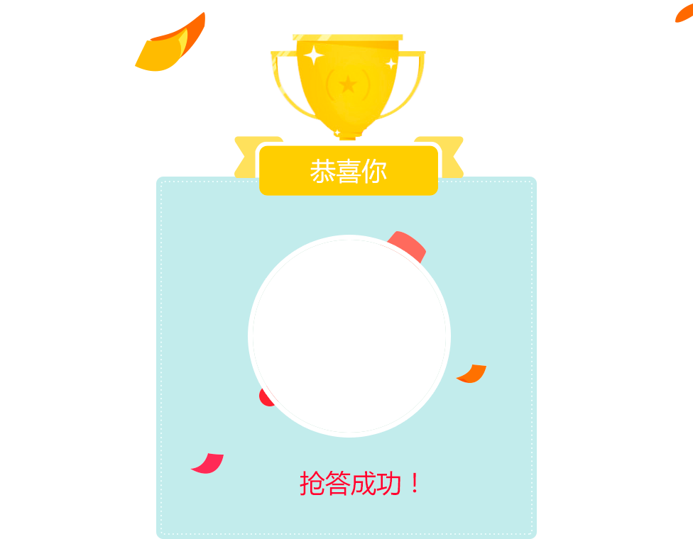

<!DOCTYPE html>
<html lang="en">
<head>
    <meta charset="UTF-8">
    <meta name="format-detection" content="telephone=no"/>
    <meta name="viewport"
          content="maximum-scale=1.0,minimum-scale=1.0,user-scalable=0,width=device-width,initial-scale=1.0"/>
    <meta http-equiv="content-type" content="text/html; charset=utf-8">
    <title>课堂</title>
    <link rel="stylesheet" type="text/css" href="../../../css/aui.2.0.css"/>
    <link rel="stylesheet" type="text/css" href="../../../css/api.2.0.css"/>
    <style type="text/css">

        .bg-floor {
            height: 100%;
            width: 100%;
        }

        * {
            margin: 0;
            padding: 0;
        }

        html, body {
            background-color:#f2f2f2;
            position: relative;
        }

        .content {
            width: 14%; margin: 0 auto; position: absolute;left: 43%; top: 35%;
        }

        .touxiang{
          width: 100%;
        }
        .txbg{
            position: absolute;
            width: 283%;
            left: -94.5%;
            top: -82.5%;
        }

        .close {
            width: 100%;
            height: 100%
        }
    </style>
</head>
<body>
<div class="content">
    <!---->
    <!---->
</div>
</body>
<script type="text/javascript" src="../../../script/api.js"></script>
<script type="text/javascript" src="../../../script/12XueApi_SDK.js"></script>
<script type="text/javascript" src="../../../script/12XueApi_Router.js"></script>
<script type="text/javascript">
    apiready = function () {

        //获得存储用户头像
        var headUrl = $api.getStorage('head_url');
        var htmlHead = ' '+
                '';
        $api.html($api.dom('.content'), htmlHead);
        var apiObj = new GridOpenApi(UrlDomain, source, version);
        apiObj.SetAuthToken($api.getStorage('token'));
        apiObj.Get(UrlRouter.GetPortrait, {
            values: {
                uid: $api.getStorage('uid'),
                size: 'b'
            }
        }, function (ret, err) {
            if (ret) {
                if (ret.ret == 0) {
                    //存用户头像
                    $api.setStorage('head_url', ret.face);

                    $api.attr($api.dom('.touxiang'), 'src', ret.face);

                }
            }
        });
    }
</script>
</html>